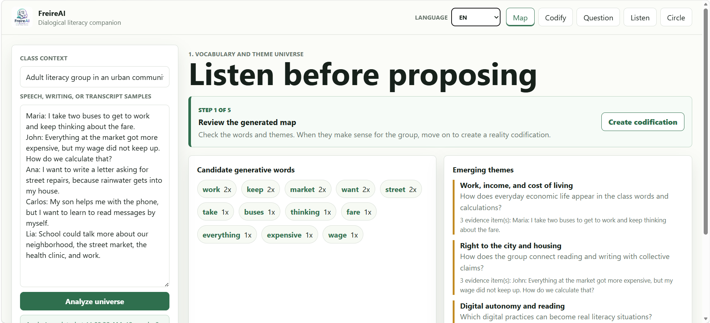
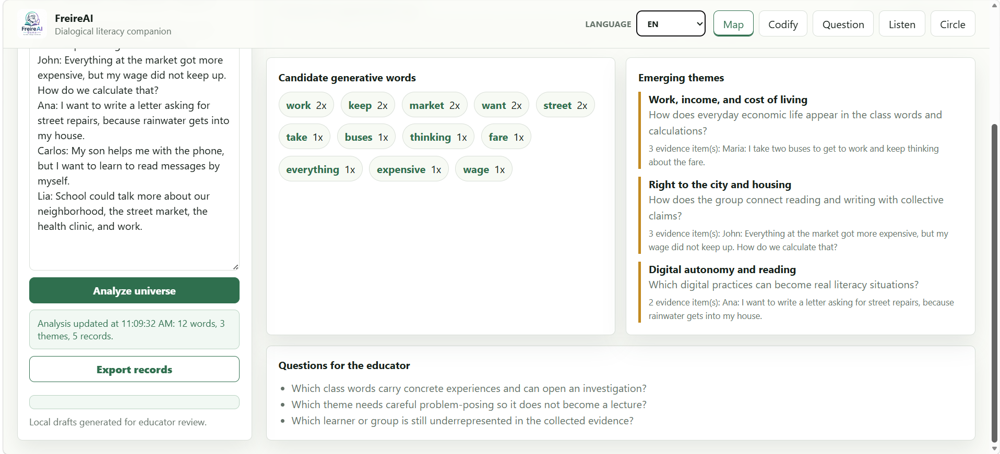
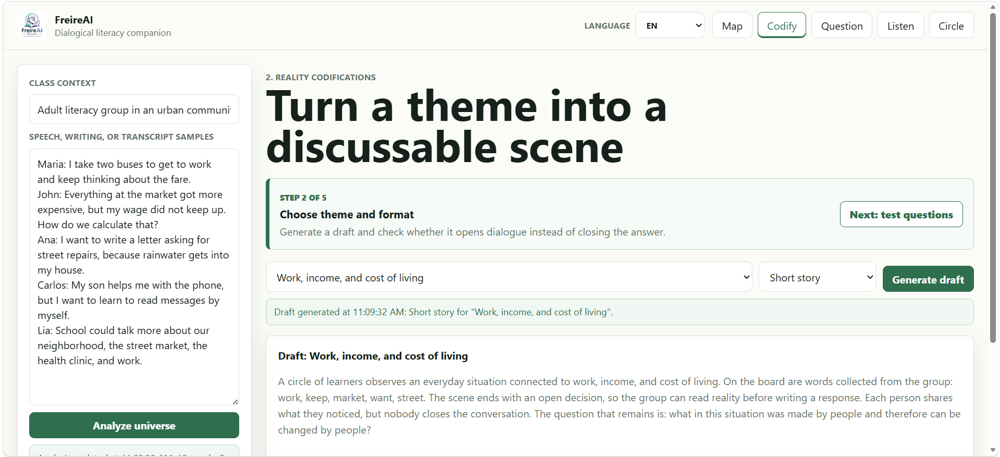
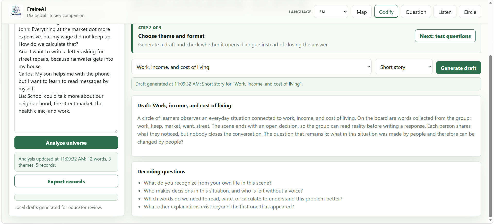
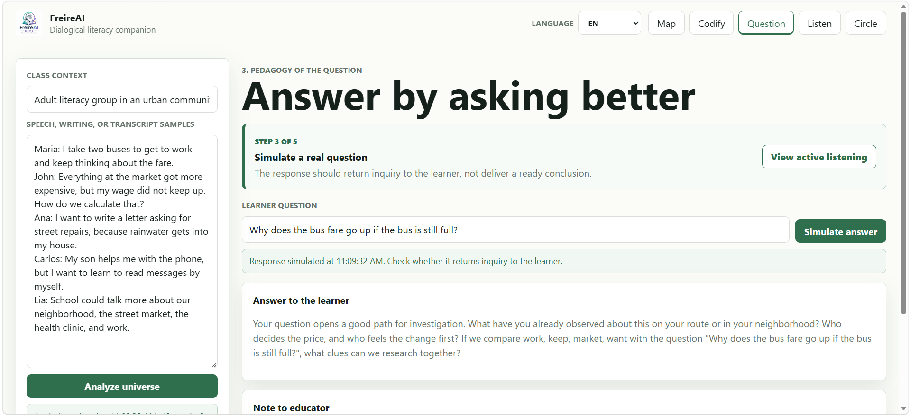

Listen before proposing
Map generative words, evidence, and tensions from learner speech or writing.
Gemma 4 Good pilot
A trilingual AI companion that helps educators listen first, create situated literacy prompts, and facilitate digital culture circles.
Method and project
FreireAI uses Gemma as a mediator, not as an oracle. It turns learner language into themes, questions, and codifications that educators can review and adapt.
Map generative words, evidence, and tensions from learner speech or writing.
Draft stories, dialogue scenes, or image prompts that open conversation instead of closing it.
Support pedagogy-of-the-question responses that preserve the educator's role.
Summarize signals for lesson planning without ranking or diagnosing learners.
Generate prompts and peer collaboration ideas for educator-led digital culture circles.
Live prototype
The published app includes local fallback mode, optional Gemma API mode, multilingual UI, and Markdown export for educator records.

Interface walkthrough
The prototype follows the educator's workflow from listening to culture-circle planning.
Educators paste learner speech, writing, or transcript fragments. FreireAI maps generative words, emerging themes, tensions, evidence, and questions for educator review.

The educator chooses a theme and format. The app drafts a story, image prompt, or dialogue scene designed to open discussion rather than provide a final answer.

The educator simulates a learner question. FreireAI responds with inquiry-oriented prompts and a note that keeps interpretation in the educator's hands.

The dashboard summarizes words, themes, voices, listening evidence, and suggested educator actions for lesson planning.

The final screen prepares a culture-circle proposal, participation balance notes, and peer collaboration ideas for the next classroom activity.
Videos
Choose the language that is most comfortable for you.
Invited validation
Please use fictional or minimized learner examples. Do not include sensitive learner data in feedback forms.
Ready to explore?